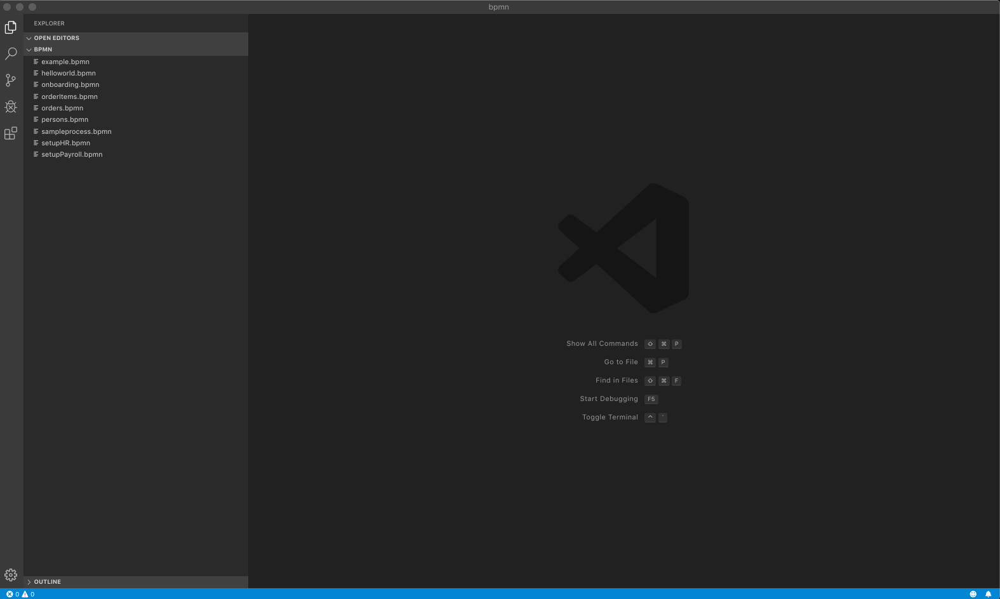
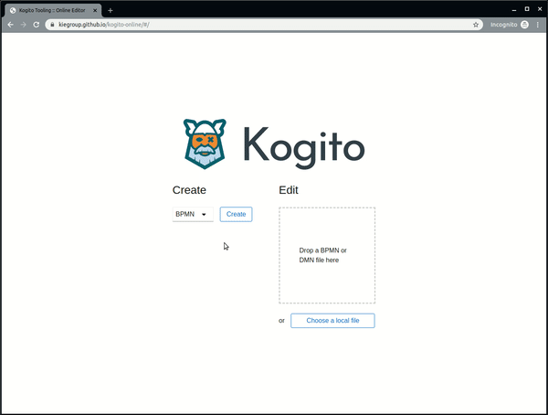
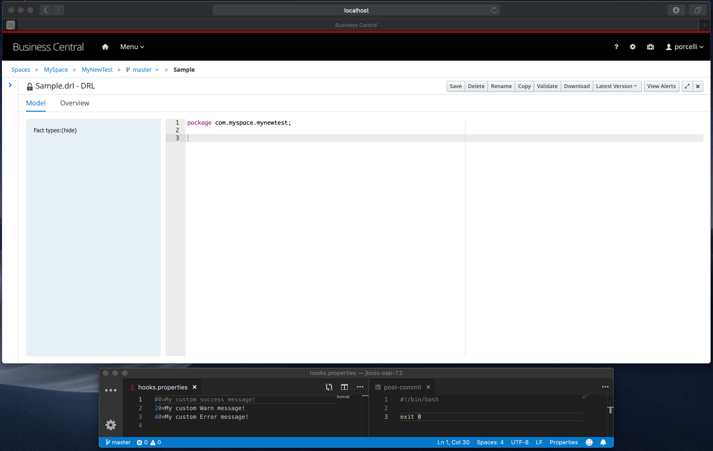
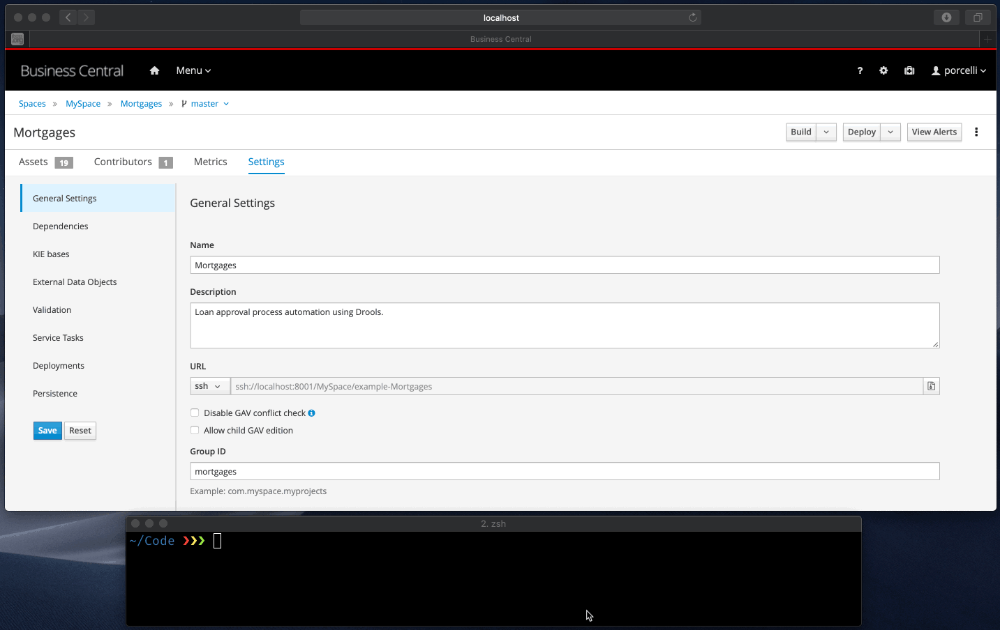
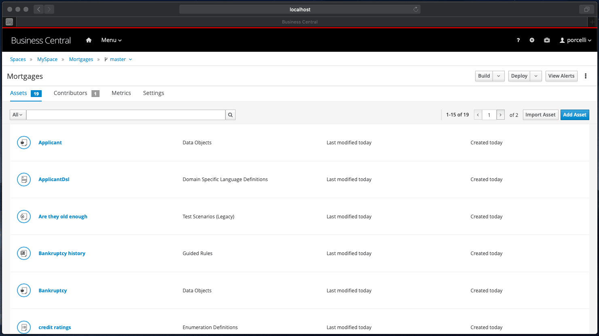
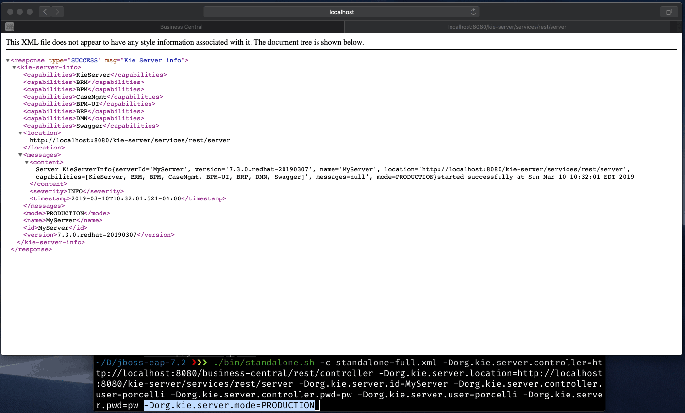
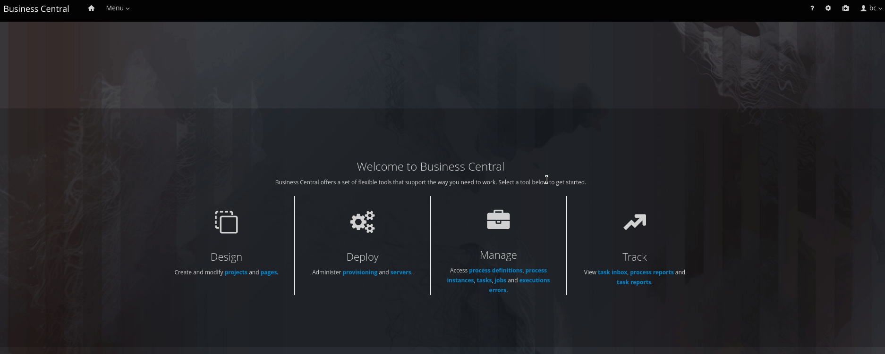

A Retrospective of What Foundation Team Delivered on 2019
What a great year! I’m really proud of everything that our team delivered in 2019. Without a shadow of a doubt, this was the most exciting year of our team. Our team’s primary focus was on Business Central and Kogito Tooling.
First of all, I would like to congrats all the engineering team for the excellent work, including Adriel 🇦🇷, Paulo 🇧🇷, Tiago 🇧🇷, Pere 🇪🇸, William 🇧🇷, Gabriel 🇧🇷, Guilherme 🇧🇷, Rishiraj 🇮🇳 , and Abhishek🇮🇳, with all the support from our manager David 🇪🇸, our Product Owner Myriam 🇲🇽 and our architect Alex 🇧🇷.
All this work is only possible because we collaborate with an impressive QE Team (Tomas 🇨🇿, Barbora 🇸🇰, Dominik 🇸🇰, and Jakub 🇨🇿), and an awesome UXD Team (Liz 🇺🇸, Sarah 🇺🇸, Kyle 🇺🇸 , Amy 🇺🇸 , SJ Clark🇺🇸 and Brian 🇺🇸). A huge thanks to everyone involved with foundation work.
Let’s do a retrospective of what our team delivered in 2019 on two major areas: Business Central and Kogito Tooling. I hope you guys enjoy it!

Kogito Tooling
Kogito, the newest project from the KIE group, is cloud-native business automation for building intelligent applications, backed by battle-tested capabilities.
Kogito is designed from the ground up to run at scale on the cloud. By taking advantage of the latest technologies (Quarkus, Knative, etc.), you get amazingly fast boot times and instant scaling on orchestration platforms like Kubernetes.
The project also goes beyond technology, and it also provides a focus on the domain. It replaces traditional generic API by a domain-based API, avoiding unnecessary abstraction leaks of the underline tools used.
Kogito focuses on developers, and this is where the BPMN Extension for VSCode plays an important role. Additional to the extension, Kogito also provides:
Tooling embeddable wherever you need it
- Code generation taking care of 80% of the work;
- Flexibility to customize, only use what you need;
- Simplified local development with live reload.
To learn more about Kogito, please visit the kogito.kie.org website.
In the second semester of 2019, our team was responsible for building the infrastructure of the kogito tooling.
We had a remarkable year for the kogito tooling! I’m proud of the excellent work and innovation that we were able to accomplish on this initiative. Let’s take a look:
BPMN/DMN VSCode Extension
This release in September marked the first piece of the new tooling infrastructure for the Kie Group Team. With VSCode support, our goal was to streamline the dev workflow of our platform, making it easy for developers to create BPMN diagrams and push them straight to kogito runtimes.

Take a look at the full blog post.
Github Chrome Extension
In October, we released our GitHub Chrome Extension. With this new tool, users are able not just to edit but also visualize DMN/BPMN diagrams — which is especially cool on Pull Request reviews.

See the original blog post, and the posts describing the cool improvements [1] [2] that we launched in December:
Online Editor
In December, we launched the first alpha release of our brand new Kogito Online Editor. It can be accessed here: http://kiegroup.github.io/kogito-online.

The Kogito Online Editor provides a simple way to edit DMN and BPMN files directly on your browser. You can create a file from scratch or upload an existing one from your device.
Kogito Tooling Resource Content API
In December, we also launched Resource Content API, a common API able to fetch content across different Channels(VSCode/Chrome/Online), an example of this need is the DMN Editor that imports another DMN model. Another example is a Runtime Process Admin UI that needs access to the Process Definition (the content of a BPMN file). See the full blog post for details.
That is it for the Kogito Tooling side! Let’s take a look at what we achieved on Business Central?
Business Central
KIE (Knowledge Is Everything) is an umbrella brand offering a complete portfolio of solutions for business automation. It contains a group of related projects, including Drools (business rule management system), jBPM (a flexible Business Process Management Suite), and OptaPlanner (constraint solver).
The web tooling to interface and integrate with those projects is called Business Central: a web UI to author, manage and track business rules and processes.
Let’s take a look at what our team delivered in this area.
High Availability
Some weeks ago, KIE Foundation Team achieved a significant milestone: Build a cloud friendly-production-ready HA infrastructure for jBPM, Drools, and Optaplanner tooling (Business Central).

This journey, targeting a fail safe infrastructure of Business Central, required a refactoring and redesign of some pieces of our codebase, with significant changes on the filesystem, index engine, distribution of events, and on Business Central UI. Still, in the end, we are delighted with the result, seeing Business Central running smoothly on a clustered environment (especially on OpenShift). Take a look at the full blog post.
Streamline the Dev Workflow on Business Central
Based on feedback from our community, one of our main goals in BC this year was to enhance the developer workflow for rules/BPM. In that area we delivered:
Git Hooks Samples
Some cool examples to make it easier for you to automate git workflows via git hooks. You should take it a look.
Git Hooks Execution Feedback Messages
Based on your feedback on our git hooks integration, we included a way to customize your messages on script execution.

Business Central now provides a mechanism to enable users getting feedback about the git hooks execution using customized messages based on the hook exit code.
SSH Keystore
To provide better automation on our platform, we delivered in Business Central an SSH Keystore. This means that users can store their public keys inside the workbench and use them to authenticate their automation scripts via ssh keys.

Contributors on Business Central
We’ve created three roles integrated directly into spaces and projects (Contributor/Admin/Owner). These roles allow you to fine-tune the permissions on your spaces and projects, and soon this will deprecate Security Permissions for spaces and projects. Take a look at the full blog post.

Role-Based Access Control for Branches
Built upon Contributors feature, we are proud to release role-based access branches on Business Central.
With this new feature, we provided a new UI on project settings to allow users to restrict the access for a target branch for a specific collaborator type. This is pretty useful for instance when you want to freeze a release branch for some roles. Take a look at the demo:
Import specific branches on Business Central
Sometimes you don’t want to import all the branches from your repo. We made it possible to import just some specific branches from your repo.

Speed up the Developer Workflow
As I already mentioned, one of our goals was to enhance the developer workflow for rules/BPM. And we included on BC two things that we believe will be game-changers for those developers who work with Business Central on a daily basis.
The first feature was the ‘Build and Install’ button on authoring. This allows users to do a build on their projects without the need for a deploy.

The second valuable addition was that we created two new Decision/Process Server Modes. DEVELOPMENT (the new default) and PRODUCTION that (Blocks “-SNAPSHOT” deployment).
These changes will allow users to quickly build, deploy our projects, making it easier (and saving many clicks) to test their changes on Kie Server while we can preserve the production consistency. First, let’s take a look at our production mode.

Workspace collaboration via change requests
We also included a cool new feature targeting business central collaboration: Change Requests support between Business Central branches.
This new workflow allows users to submit their changes for approval from one branch to another, as well as the ability to review the changes prior to the integration.
See details about this feature on this post and a sneak peek on this video:
Form modeler support for class models from external dependencies
We created a way to allow users to load models from external dependencies on forms. This allows us to generate forms for processes that use classes from external dependencies (not created on the same project with Data Modeler but that are added as dependencies of the project).
Upload of multiple documents for human task forms
We created in the forms designer a widget called “Document Collection”. It enables you to upload multiple documents to a process or task form. You can also use the “Document Collection” widget for process or task forms that have a variable with the type `org.jbpm.document.DocumentCollection`. Additionally, it also supports the legacy type `org.jbpm.document.Documents`.
Importing and exporting Dashbuilder data
On Business Central 7.25 (August) 7.25 we added a feature that allows users to import and export all data related to Dashbuilder: Datasets, Perspectives, and Navigation.

CSS Editor on Form Builder
We also created a cool new CSS Editor on our Form Builder. Take a look on your demo:

React components in Red Hat Business Central
We also created a way to write Business Central components based on React. Take a look at the full blog post.
Business Central Brand Consolidation
To consolidate and promote better our technology stack, since 7.18 version we consolidated and rebranded the workbenches to a single distribution called to Business Central (accessible via /business-central). Take a look at this post to do a deep dive on this migration.

Offline Charts
The Dashbuilder default chart implementation was replaced from Google Charts to C3.js. The main reason behind this move is to allow our users to use Business Central in an offline environment (Google Charts requires internet connection).
UX improvements
With the excellent collaboration from the UX team, we are able to improve a lot of Business Central UX. Some highlights:
AF-2176 — Error messages need to be able to be copied
In the past, error messages often overrun the size of the field on the bottom of the web page. The only way to read them was hovering over the field and there was no way to copy the text of a message. We fixed this formatting the error message and also adding a copy button that copies all the errors on CSV format.
AF-2244 — UX support/guidance after new deployment
After deploying a new project, the user is now able to ‘View deployment details’ with a useful link.

AF-2151 — Modify asset Save button behavior and presentation
Instead of asking the user every time to add a comment to the file commit on the Save action, we now provide a split button with the primary (default) option being simply Save the file, with no dialog presented before saving — streamlining the dev workflow.
If the user wants to comment on the save operation, he/she can still rely on our new option “Save with comments”, that will be presented with a dialog asking for the file save the comment.

AF-2214 — User confirmation when closing the workbench with unsaved stuff
If the user had unsaved changes and closed the browser, then they would lose all changes without being warned about it. Thus, as a last resort, after this PR the browser will ask the user for confirmation when closing the tab, closing the browser or refreshing the page. (Currently, this functionality is only supported on Google Chrome).
AF-2215 — When you add or remove a field from the form, it scrolls up.
This fixes the issue that every time that you added or removed a field from the forms, it would scroll to the top. Now we keep the form at the same position after every edit.
AF-2216 If I shutdown the server, the Web UI just spins and spins w/o an error message
After this PR, if the server is shutdown, we show an appropriated pop up saying that the server is being shut down, instead of a generic error message.
AF-2177 — Add Project button should also allow importing

If the URL has leading or trailing spaces when importing a git project, the import fails. Field validation should handle this automatically for the user.
Improvement in generic error dialogues
We added a bunch of new features to improve generic error dialogues in business central. See a full blog post about it.

Thank you to everyone involved!
I would like to thank everyone involved in this remarkable year, from the awesome Foundation Team Engineers, to the lifesavers QEs, Docs, and to all the UX people that help us make our work look fantastic!